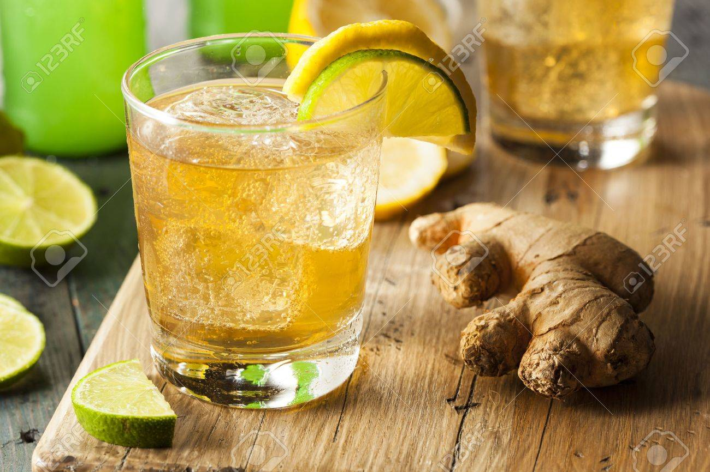

Real Ginger Ale
<
Ingredients
- Fresh Ginger
- Limes
- White or Brown Sugar
- Drinking Water
- Carbonated Water
Steps
- Remove skin from ginger by sliding across it with a spoon (alternative: use a carrot peeler). Then dice the ginger.
- Add the diced ginger into a saucepan. For every cup of ginger, we will add two cups of water. For a decent amount of ginger ale to consume for the week, use two cups of ginger.
- Grate some of the lime so that the shavings fall into the saucepan.
- Heat the mixture to boil. Once it is boiling, turn the heat down and place a cover over the pan. Wait 15 minutes.
- Run the mixture through a strainer, and collect the juices that fall from the strainer. Push down on the solid matter in the strainer with a spoon or a bowl to get as much juice out as possible.
- Add the juice back into the pan. For each cup of ginger, add a cup of sugar.
- Heat the liquid back to a simmer. Let it cool for 15 minutes, stirring regularly.
- Afterwards, place the liquid in a bowl, and let it cool for an hour.
- If storing, place the syrup in an airtight container. It should last like this for about 2 weeks before going bad.
- If serving, mix the syrup with carbonated water. Optinally, you can add lime juice to change the flavor a bit.
Return to Homepage